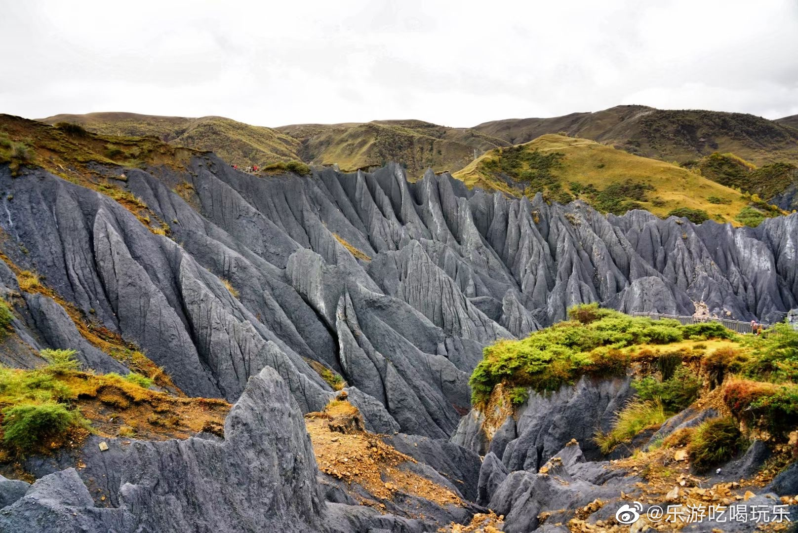

核心峡谷 · 穿行步道
异星穿行木栈道
观光车送到峡谷入口后，沿木栈道步入下沉式糜棱岩石林深处。两旁黑色石峰犹如巨型剑戟直插苍穹，地貌怪异荒凉，仿佛脱离地球引力漫步在外太空行星表面。
📸 机位与穿搭： 穿纯白色长裙、反光银亮色风衣或租用宇航服，在狭窄深邃的石阵中仰拍，黑白对撞视觉冲击力拉满。
观光车送到峡谷入口后，沿木栈道步入下沉式糜棱岩石林深处。两旁黑色石峰犹如巨型剑戟直插苍穹，地貌怪异荒凉，仿佛脱离地球引力漫步在外太空行星表面。

高位观景台 · 俯瞰石林登上最高观景台，墨黑色的奇异石林与外围嫩绿/金黄的草甸、格桑花海、远方的藏寨村落形成奇妙的反差，充满自然地质神韵。